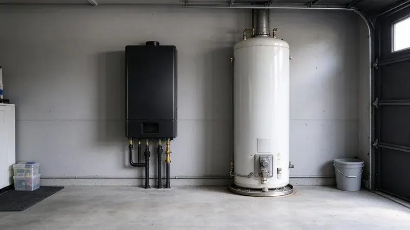
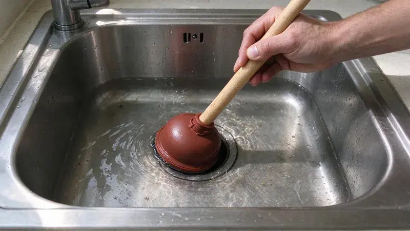
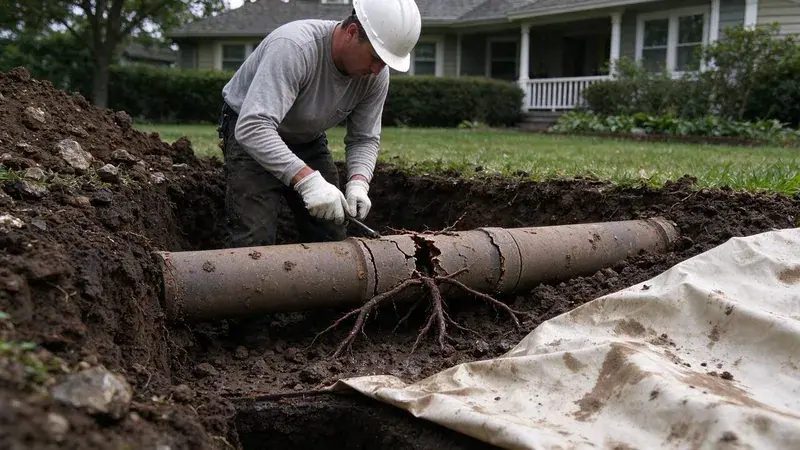

Plumbing Tips & Updates From KFR Plumbing
 15Oct, 2026
15Oct, 2026Slab Leak Warning Signs Every Iowa Homeowner Should Know
Learn the crucial signs of a slab leak to protect your Iowa home's foundation and avoid expensive repairs.
 6Oct, 2026
6Oct, 2026How to Protect Your Pipes Before the Next Iowa Freeze
From long winters to rare cold snaps, a few simple steps keep Iowa pipes from splitting overnight.
 27Sep, 2026
27Sep, 2026Hard Water in Iowa: When a Water Softener Pays for Itself
Hard water can be a costly issue in many homes, but a water softener can offer significant long-term savings.

18Sep, 2026Tankless vs. Tank Water Heaters: What Works Best in Iowa
Choosing between tankless and tank water heaters can be tough, so let's break down what works best here in Iowa.

9Sep, 2026Kitchen Sink Backups: Causes, Prevention and Quick Solutions
Got a kitchen sink backup? We cover the common causes, prevention tips, and quick fixes.

31Aug, 2026Underground Pipe Damage: Common Causes and Modern Repair Solutions
Underground pipe problems can be a homeowner's worst nightmare, but modern solutions make repairs easier.
 22Aug, 2026
22Aug, 2026Hydro Jetting vs. Snaking: Which Drain Cleaning Method Do You Need?
Clogged drains are a headache, but knowing the right cleaning method, hydro jetting or snaking, can save you time and money.
 13Aug, 2026
13Aug, 2026Why a Sewer Camera Inspection Belongs on Every Iowa Home Inspection
Discover why a sewer camera inspection is a non-negotiable part of any Iowa home inspection.
Have a plumbing question we did not cover?
Our team is happy to talk it through and give you a straight answer.